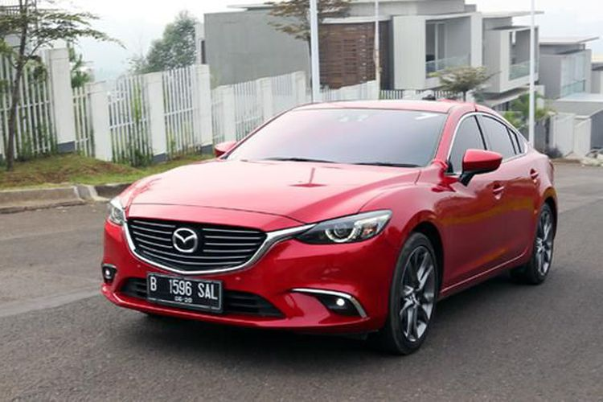

Soal “Recall” Mazda6, Indonesia Belum Ada Kabar
STANLY RAVEL
KabarKabur.com - 27/09/2017, 16:02 WIB

Mazda6.(Mazda Motor Indonesia (MMI))
KabarKabur.com - Mazda resmi melakukan penarikan 60.000 unit Mazda6 yang berpotensi mengalami kerusakan power steering dan airbag. Kasus ini sudah diterima oleh Mazda Motor Corporation (MMC) di Jepang yang dilaporkan langsung oleh National Highway Traffic Safety Administration (NHTSA) Amerika Serikat.
Lantas bagaimana dengan nasib Mazda6 yang ada di Indonesia. Menanggapi hal ini, PT Eurokars Motor Indonesia (EMI) selaku pemegang merek Mazda mengatakan belum ada informasi dari pihak prinsipal di Jepang.
"Sampai saat ini belum ada laporan. Kalau ada masalah recall kita pasti sudah dapat kabar langsung dari pihak MMC Jepang, termasuk soal produk dan tipe apa, sampai detail nomer sasis mobil yang terkena dampak," kata Fedy Dwi Parileksono, Public Relations EMI saat dihubungi KompasOtomotif, Rabu (27/9/2017).
Menurut Fedy, dari informasi Mazda6 yang ditarik untuk perbaikan hanya untuk produk yang dipasarkan di Amerika Utara dan Kanada. Sementara untuk negara lain belum ada informasi.
Namun bila memang ternyata Mazda6 di Tanah Air ikut kena dampak maka EMI juga akan menkampanyekan program perbaikan. "Pasti kita kabarkan dan kita juga akan lakukan perbaikan, karena itu bentuk kepedulian terhadap pelanggan kami," ucap Fedy.
Sekadar informasi, Mazda6 yang ditarik merupakan unit produksi 3 November 2014 sampai 9 Desember 2015. NTSA melaporkan adanya percikan las berlebih pada frame jok penumpang depan yang berpotensi menimbulkan korsleting dan memicu lampu indikator pada instrumen cluster menyala, sehingga membuat fungsi power steering dan airbag tidak bekerja.
penulis :Stanly Ravel
Editor :Agung Kurniawan